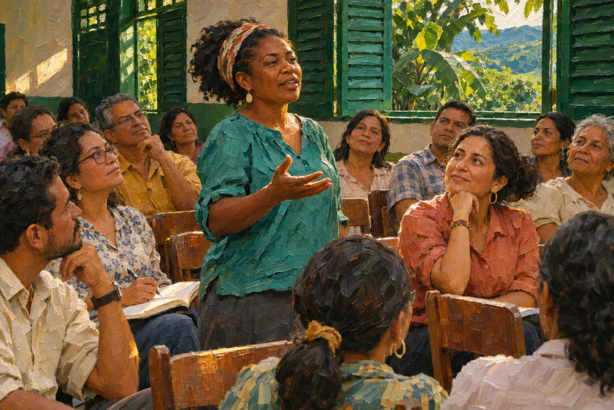
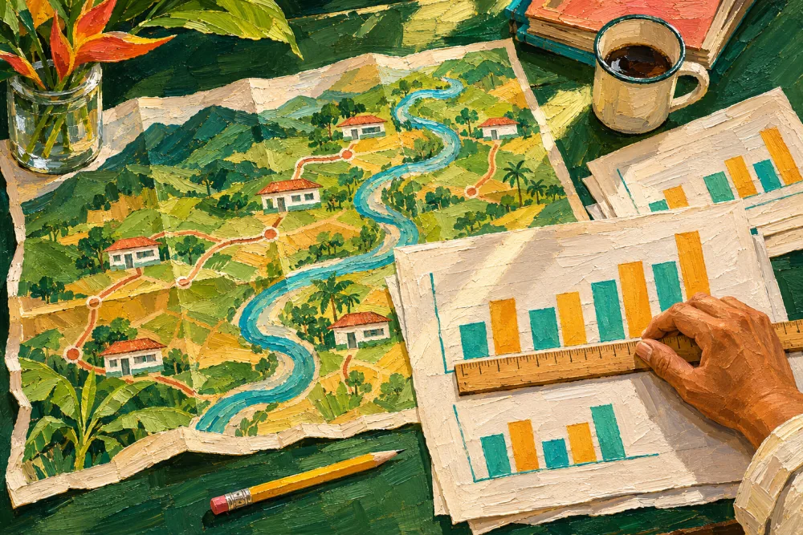
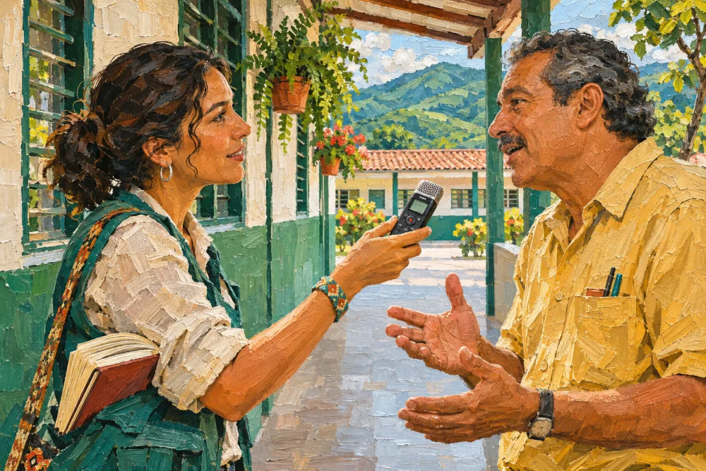
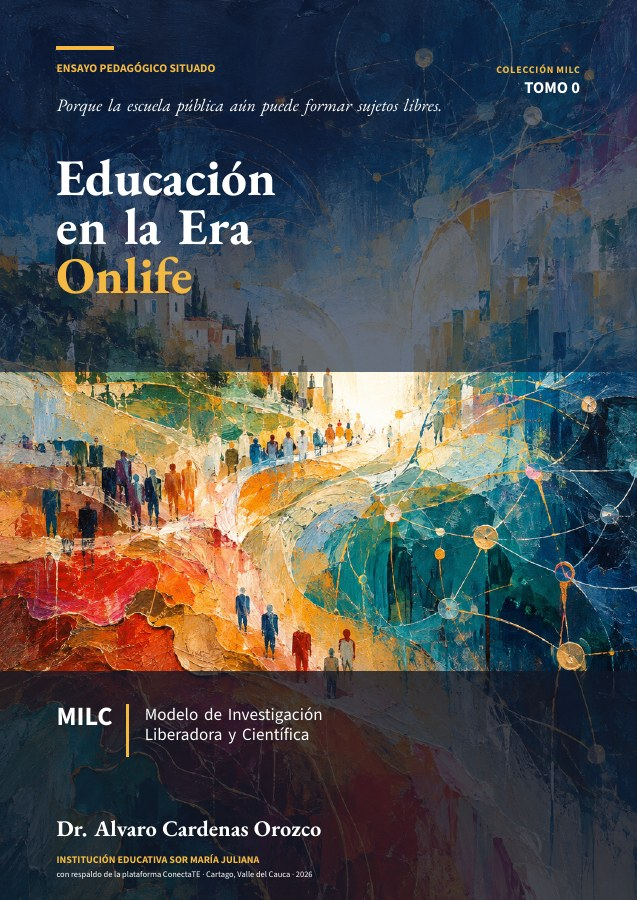
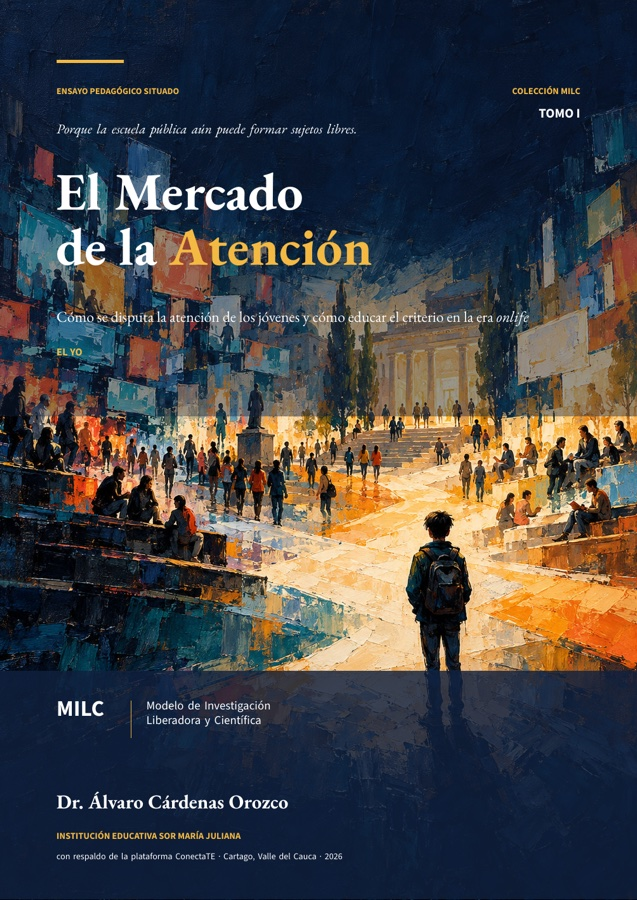
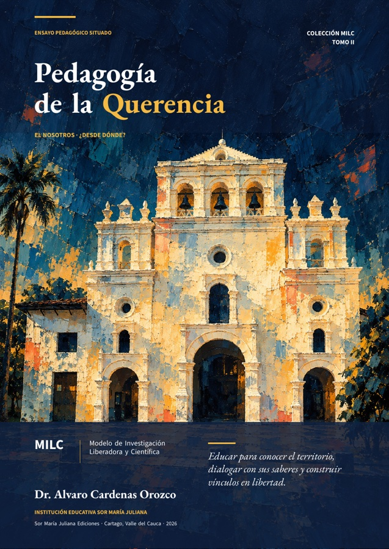
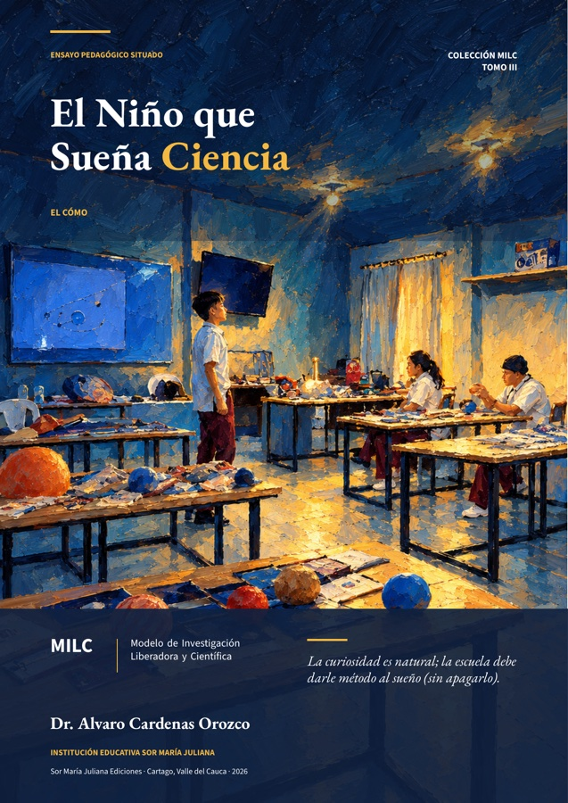
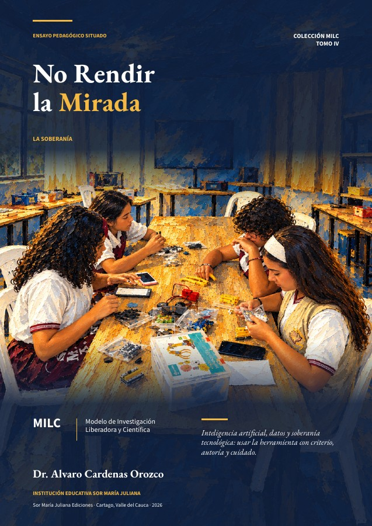
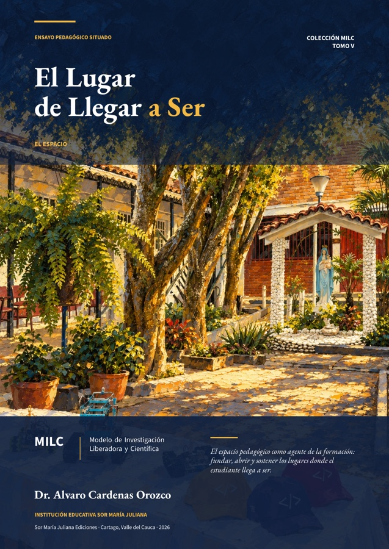

Centro de Estudios e Investigaciones Docentes de la Subdirectiva SUTEV Cartago
Instancia pedagógica, investigativa y científica del SUTEV (art. 52 del Estatuto). Forma, acompaña y publica con los docentes de Cartago, Ansermanuevo, Alcalá, Ulloa, El Águila, El Cairo, Argelia y Toro.
tesis de docentes y de sus familiares: 3 de doctorado, 17 de maestría y 2 de pregrado.
experiencias pedagógicas del Norte del Valle, curadas por el CEID, seleccionadas por FECODE.
actividades directas de la secretaría en cinco frentes de trabajo.
¿Qué necesitas?
Lo que el docente viene a hacer, a un clic. Cada tarea lleva a su ficha, a las convocatorias o al archivo.
Ver las convocatorias abiertas
Con fecha de cierre y requisitos
Ver las experiencias pedagógicas
EPA y PEPA del Norte del Valle
Pedir asistencia para mi tesis
Gratuita, sin certificación
Leer «Voces que Transforman»
Fascículo 1 · 8 experienciasConsultar permisos y licencias
46 fuentes normativas
Leer informes y propuestas
Gestión 2026 · sismo · art. 52
Lo último
Todas las novedades →Noticias, actividades, informes, propuestas y publicaciones en un solo archivo, por fecha. Cada ficha lleva su tipo y su municipio.
 01
01
Informe de gestión del CEID Cartago 2026
 02
02
Propuesta de reforma del artículo 52 del Estatuto
 03
03
«Las grietas que ya estaban»: datos del sismo del 10 de agosto
 04
04
Capacitación docente en IA: cuatro sesiones con su guía metodológica
Voces que Transforman, Fascículo 1
Agenda y convocatorias
Ver todas →Fechapor confirmarForo Municipal de EPAs
Socialización de las experiencias pedagógicas acompañadas por el CEID.
Convocatoria · en construcción En curso2026
En curso2026Robótica educativa
Proceso que convoca Ecosistemas Digitales para la Educación Posmedia y certifica la Universidad del Valle.
Cierre y certificaciónFechapor confirmarMesa Territorial de Capacitación
Próxima sesión con participación del CEID.
Fecha por confirmarTodas las convocatorias
Abiertas, próximas y cerradas, cada una con su fecha de cierre y sus requisitos.
Las secciones del CEID
Cinco salen de las funciones del art. 52 del Estatuto del SUTEV; Noticias reúne novedades y convocatorias. Ver el artículo y su análisis →
Estatuto, propuestas e informes
El art. 52 y su propuesta de reforma, las propuestas en defensa de la educación pública, «Las grietas que ya estaban» y los informes de gestión.
Clases, conferencias y talleres
Gratis para los afiliados y sus familias: pedagogía, TIC e IA, conferencias y talleres, y las formaciones que ya hizo el CEID.

Docentes que investigan
Tesis, artículos arbitrados, ciencia ciudadana y asesoría gratuita a proyectos de investigación.
Revistas, libros y contenidos abiertos
«Voces que Transforman», «Educación y Cultura» de FECODE, la guía de permisos, el Modelo MILC y las publicaciones de los docentes.
Proyectos pedagógicos, Congreso y reconocimiento
8 EPAs curadas para el Congreso Pedagógico Nacional; FECODE seleccionó 3. Foro Municipal de EPAs, en construcción.

Lo más reciente
Todo lo que publica el CEID, por fecha, y las convocatorias abiertas, próximas y cerradas.
Publicaciones abiertas
Acceso abierto y citables por DOI de concepto. La Colección MILC es material del secretario que el CEID usa en sus capacitaciones.
Permisos, licencias y bienestar laboralCEID Cartago

Educación en la Era OnlifeTomo 0 · MILC
El Mercado de la AtenciónTomo I · DOI
Pedagogía de la QuerenciaTomo II · DOI
El Niño que Sueña CienciaTomo III · DOI
No Rendir la MiradaTomo IV · DOI
El Lugar de Llegar a SerTomo V · DOIEscribe con nosotros
El CEID acompaña a los docentes a sistematizar y publicar su experiencia.
- Tesis y trabajos de gradoPedir asistencia técnicaGratuita, sin certificación.
- Voces que TransformanProponer una experienciaPara el próximo fascículo.